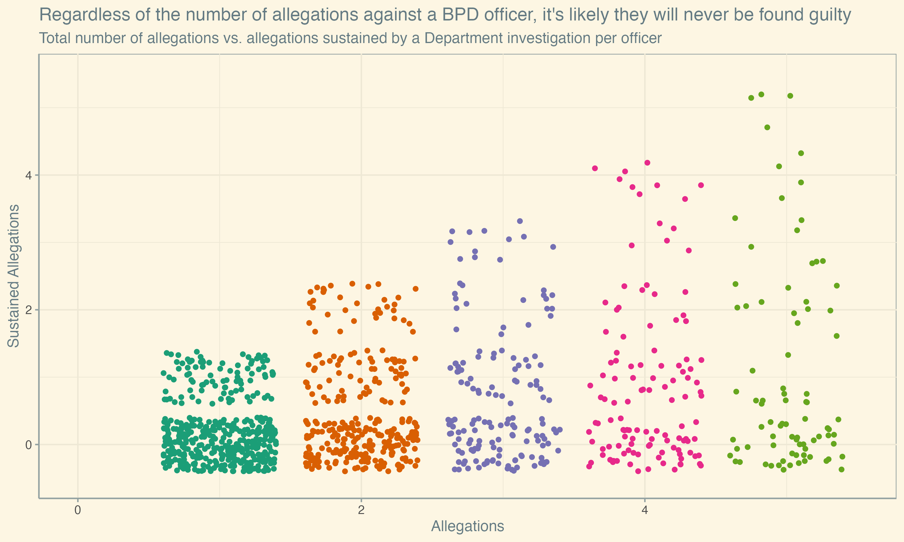
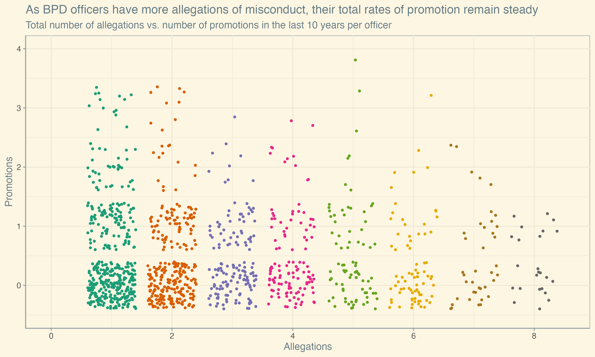
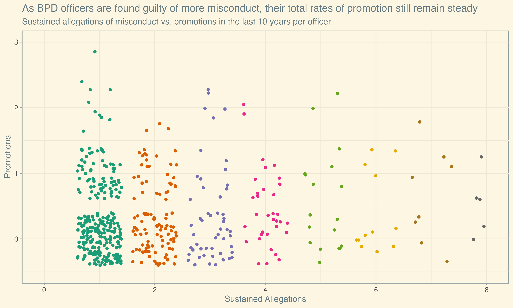

Jake Neenan
The Boston Police Department is known to be reluctatnt to discipline its officers. Recent Boston Globe investigations have found that the oldest police department in the U.S. drags its feet before completing investigations, and often throws out allegations of misconduct when it does. Nearly a third of all internal investigations filed in the last 10 years are still pending. Of cases where misconduct is foud by the Department, 40% result in no punishment and another 37% result only in a verbal warning.
The sheer volume of citizen complaints has fallen since the 1990s, which is real progress, but the Department can't bring itself to hold officers accountable when they happen.
An analysis of city payroll data and 10 years' worth of BPD disciplinary records sourced from the Globe shows that both officers who are accused and officers who are internally found guilty of misconduct also avoid long term consequences. The Department is just as willing to promote known offenders, even those who have been referred to internal affairs multiple times, as officers with clean records and still defaults to finding officers innocent when they're accused of patterns of misconduct. In fact, the promotions per officer for those who have never offended and those who had been found guilty at least once before their promotion are nearly identical.
Reluctance to sustain allegations

Even for officers who get referred to internal affairs time and time again, the most likely outcome is for the Department to side with them.
Promoting accused officers

For officers accused of misconduct, the number of promotions they have received in the last 10 years is not related to the number of times they have been accused. It is less common for officers to have large number of allegations, but similar portions of those smaller groups have risen through the ranks.
Promoting known offenders

It's even less common for an officer to have a sustained allegation on their record, let alone multiple, over the last decade. But for those who have, similar numbers again rise through the Department regardless of their record.